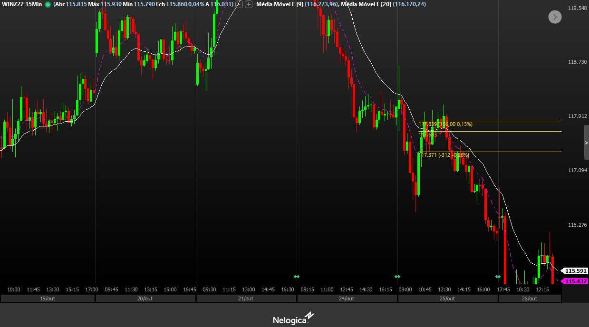
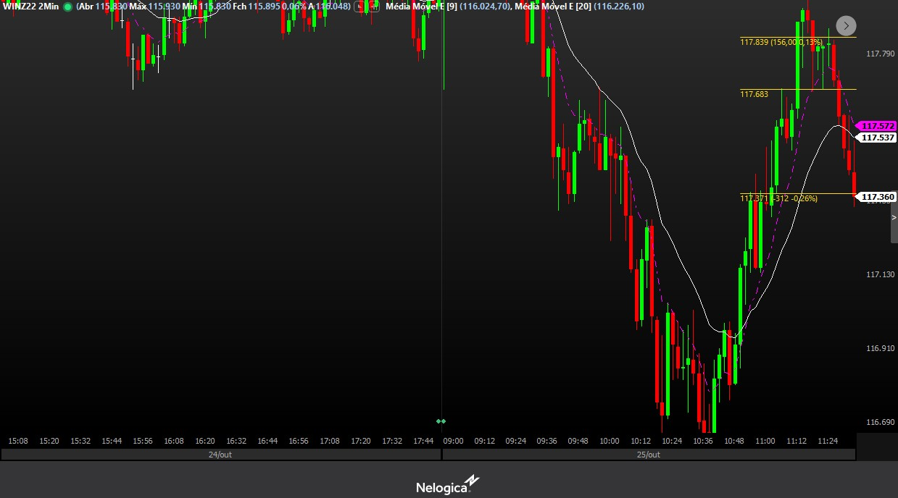
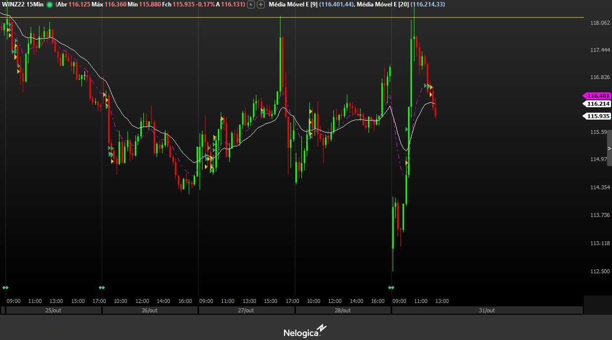
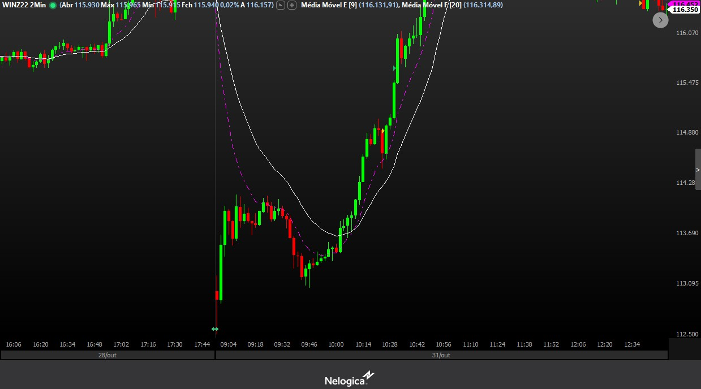
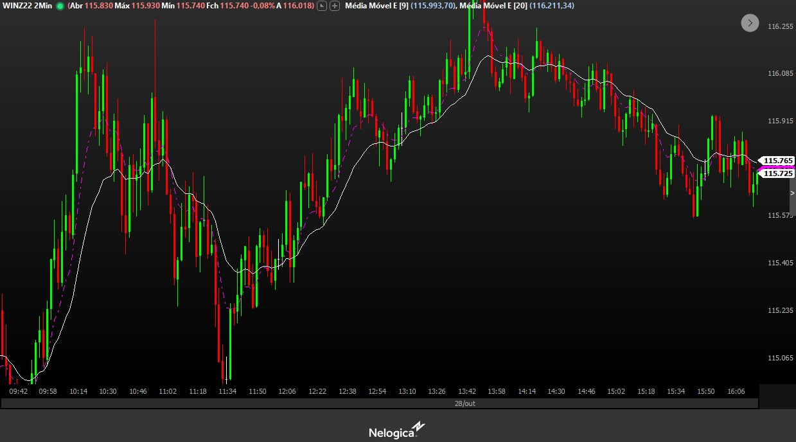

Setups
9.1
9.3
Gerenciamento
200,00 de risco por operação, para buscar 400,00
Observações
- Após dia negativo 1 p/ 1 liberado para buscar psicologico no dia seguinte
- Evitar ao máximo dois dias negativos
- Evitar tomar dois stops seguidos no dia
- Máximo 3 operações por dia (EVITAR) bater o máximo
Contexto para 9.1
Mercado em tendencia de baixa, agrediu forte para cima
Entrada 9.1
Mercado em tendencia de baixa, agrediu forte para cima
Contexto 9.3
Abertura com monster gap, mercado lateral nos 15 minutos e com espaço nos 2 após mostrar força
Entrada 9.3
Abertura com monster gap, mercado lateral nos 15 minutos e com espaço nos 2 após mostrar força
Evitar!
Evitar mercado com muito pávil, stop fácil
Diário teste mesa prop:
Dia1: (imagem)
Resumo: